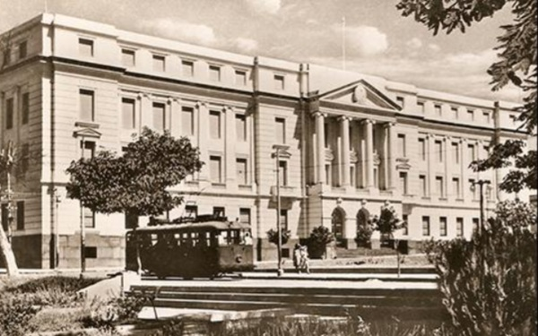

Origen Siglo XX. Año 1942-1944
Proyectista Sanchez Lagos. Luis M.de la Torre, F. Corbellani, R.Cardini
Nacionalidad del Proyectista Argentinos e italianos
Constructor Com. Argentina Acevedo y Shaw S.A.-Comp .Americana de Const. Nacionalidad del Constructor Argentina
Aspectos Históricos
El Banco Nacional de Fomento fue creado por Decreto Ley Nº 281/1961. Es una entidad autárquica con personería Jurídica, cuyo patrimonio se considera jurídicamente separada de los bienes del Estado. La Duración del Banco será por tiempo indefinido y las obligaciones que contraiga están garantizadas por el Estado Paraguayo. Esto dice el Artículo 1° de la Ley de su creación.
Tuvo anteriormente varios nombres:
Banco Nacional del Paraguay (1874)
Banco del Paraguay(1878)
Banco Nacional del Paraguay S.A. (1881)
Banco Nacional del Paraguay (1883)
BANCO AGRÍCOLA DEL PARAGUAY, creado por Ley del 24 de setiembre de 1887 e incorporado al Banco del Paraguay en el año 1947 por Decreto N° 23.681 del 23 de diciembre de 1947, se ordena incorporar el Banco Agrícola del Paraguay al Banco del Paraguay -artículo 1°- y se establece que el activo y el pasivo del Banco Agrícola del Paraguay se transfiera al Banco del Paraguay –artículo 2°-.
BANCO DE LA REPÚBLICA DEL PARAGUAY, creado en el año 1936 por Decreto-Ley N° 11 del 22 de febrero de 1936, el cual a su vez había reemplazado a la antigua OFICINA DE CAMBIOS creada en 1916.
BANCO DEL PARAGUAY, creado en el año 1944 por Decreto-Ley N° 5130 del 8 de setiembre de 1944. El Banco del Paraguay reemplazó al Banco de la República del Paraguay y posteriormente absorbió al Banco Agrícola del Paraguay.
Banco Nacional de Fomento (1961 hasta hoy día)
El proyecto del edificio fue realizado por los profesionales Arquitectos Luis María de la Torre, Ferruccio Corbellani - Roberto Cardini y, la empresa constructora argentina Acevedo y Shaw S.A. y Compañía Americana de Obras Públicas. Todos los trabajos fueron supervisados por el Ingeniero Pascual A. Gagneten de nacionalidad argentina y por el Arquitecto Francisco Canese de nacionalidad paraguaya.
La construcción de la obra inició en el año 1942 y finalizó en 1944 siendo inaugurado el 27 de diciembre del año 1945.Tuvo un retraso con respecto al plan de ejecución original, que no pudo cumplirse debido a las dificultades en la provisión de algunos materiales de construcción debido a la Segunda Guerra Mundial.
El estilo del edificio es neoclásico y monumentalista. En su proyección arquitectónica primó la idea de hacer un edificio cerrado que brinde sensación de seguridad y protección, ajustándose a la concepción de banco que se tenía en la época. Las columnas, rematadas con capiteles dóricos, sobre las que descansa el frontis del edificio dan la impresión de solidez y el poderoso respaldo de una institución firmemente asentada, tal como debe ser una entidad bancaria. Posee un amplio salón de operaciones, rodeado de ventanales traslucidos.
Muchos críticos ven en él un parecido al edificio del Palacio de Buckingham pero en menor escala. Indudablemente existe cierta inspiración en el palacio londinense, en su volumetría, el frontispicio central, los niveles, la simetría, el cuerpo principal y las salientes laterales. Aunque en los detalles poco tienen en común.
Fue el primer edificio estatal de esta magnitud construido después de la Guerra del 70. Antes que eso, en el sector privado hubo algunas construcciones importantes, como el Palacio Alegre actual sede del Ministerio de Hacienda y la Farmacia Alemana de Chile y Estrella, todas obras neoclásicas.
Según Resolución N° 89/99 de fecha 14 de noviembre de 1999 la Dirección General de Bienes Culturales, dependiente del Ministerio de Educación y Cultura declaró el edificio como Parte del Patrimonio Histórico Arquitectónico y Natural y Parte del Acervo Cultural de la Republica y se encuentra amparado por la Ley 946/82 De Protección a los Bienes Culturales.
Aspectos Formales: Desde el punto de vista de la tecnología aplicada: Se observa en la fachada principal del edificio, el estilo neoclásico con las líneas compositivas de Base-Cuerpo y Coronamiento, marcando tendencias en el paisaje urbano asunceno. Este nuevo patrón edilicio, son resultado de una arquitectura adoptada en nuestro país a inicios del siglo XX.
Aspectos Espaciales y Técnicos Constructivos: Tipología Planta arquitectónica en U Descripción El edificio se halla implantado en un terreno amplio, sobreelevado con respecto a la calle, y sobre límite municipal o vereda. Según datos proveídos por el Departamento técnico de construcciones de dicho ente: El edificio se compone de un cuerpo principal y tres pisos altos y un sub suelo, cuyos frentes, principal y laterales miden 75 y 16 m. respectivamente, la altura total media sobre nivel de vereda es de 21m. La superficie cubierta del edificio es de 7000 m2.
Para su construcción se utilizaron hormigón armado en cimientos y estructura, ladrillos cerámicos en mampostería, pisos de baldosas de granito y en los Servicios higiénicos se usaron baldosas comunes. Las puertas del interior de las oficinas son de madera. Las ventanas son tipo persianas de metal.
En la fachada principal se aprecia la subdivisión de los cuerpos del edificio, distintos y orgánicos entre sí, destacándose claramente en su entorno. El Acceso principal destinado al público, stá definido por tres grandes puertas de bronce tipo corredizo con arco de medio punto, jerarquizadas por una importante escalinata. Sus amplios espacios libres (diseñados por la misma empresa constructora y equipados con cuidada jardinería) a más de proporcionar una hermosa perspectiva al edificio, fueron concebidos como una prolongación del gran espacio abierto que constituyen las cuatro grandes plazas.
El edificio se halla aislado de las construcciones vecinas mediante espaciosos jardines. Actualmente sus oficinas ocupan las casas aledañas que fueron adquiridas por el Banco y fueron refaccionadas en su interior sin alterar las fachadas de las mismas. Ejemplo: Casa ubicada sobre la calle Cerro Corá esquina Yegros.
Grado de Valoración (Según Ordenanza Municipal JM 35/96) Valor Arquitectónico; Valor Ambiental.
Comentarios: El grado de valoración es consignado por la Oficina Centro Histórico de la Municipalidad de Asunción. Forma parte del Patrimonio Nacional por la Ley 5621/16, Resolución Nº 89/1999 de la Dirección General de Bienes Culturales/VMC/MEC. La Municipalidad de Asunción lo ha catalogado a través de las Ordenanzas HJM Nº 28/96 y 35/96.
Observaciones: El emblemático edificio ubicado en el Centro de la ciudad de Asunción, fue concebido con una evocación de estilo neoclásico, que se manifiesta en la conjugación adecuada de los elementos arquitectónicos que le confieren a la obra, sobriedad y elegancia sin ostentación, cualidades acordes al carácter del "principal banco de la República”.
Bibliografía
Bibliografia www.bnf.com.gov.
www.asunciondeantano.py
Secretaría Nacional de Cultura (SNC): Dirección General de Patrimonio Cultural -
Dirección de Registro de Patrimonio - Departamento de Registro de Patrimonio Cultural.
Municipalidad de Asunción- Dirección General de Desarrollo Urbano-Dirección de Planeamiento U.-Departamento de Patrimonio Cultural
Vinculación con otras fichas
Vinculación Ficha Nacional de Identificación del Bien Cultural Inmueble-Dirección de Registro de Patrimonio- Dirección General de Patrimonio Cultural de la Secretaría Nacional de Cultura. (SNC)
Ficha de Inventario de Edificios- Año 1990- Oficina Centro Histórico- Municipalidad de Asunción.
Equipo de trabajo
Catalogador Arq. Mirtha Ibarra C.
Colaboradores Arq. Clarisse Insfrán E.
Otros Colaboradores Func. Gustavo Barrios Álvarez
Func. Humberto Battioni
Ente componente Dirección de Registro de Patrimonio
Fecha recolección de datos 01/05/2018
Operador Mirtha Ibarra
Fecha de registro 22/06/2020